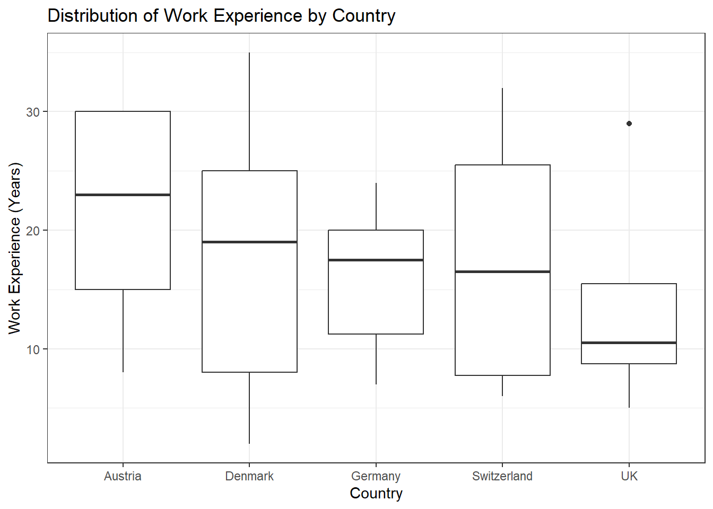
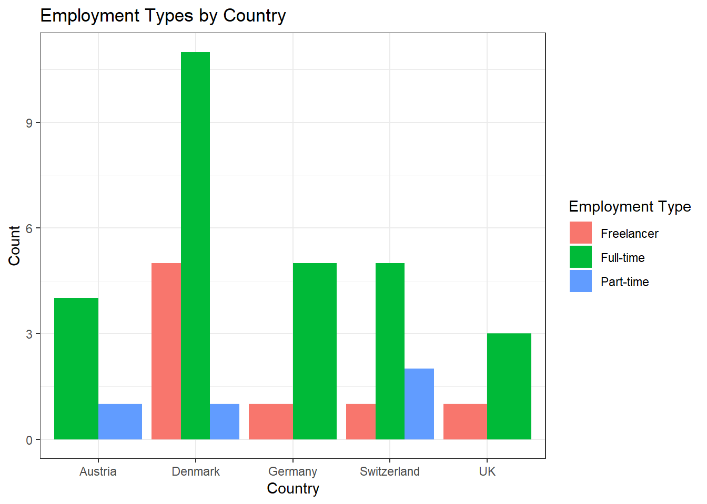

Exercise 5: ggplot
After working through Exercise 5, you’ll…
- be able to see a graph and recreate it with
ggplot2 - be able to see a problem and customize any type of plot with
dplyr&ggplot2to solve it
Task 1
Please set your working directory and load the WoJ_names.csv.
You need to load the ggplot2 package:
Now, create a box plot to visualize the distribution of work experience in years for each country in the dataset:
- Assign country to the x-axis and work_experience to the y-axis.
- Use the
geom_boxplot()function to generate a box plot. - Choose an appropriate theme.
- Label the axes and the title appropriately using
labs().


Task 3
Try to create an advanced version of your graph from Task 2 that shows the names of the journalists. You can use the geom_text function for the labels, like this:
If you’d like to adjust the position of the labels, you can add the
argument , hjust = 0, vjust = 0 to this command, like this:
Task 4
Next, try to recreate this bar plot. Use geom_bar(position = "dodge") to create it. dodgeproduces the graph below whereas geom_bar(position = "stack") will create a stacked bar chart.

Task 5
Try to create an advanced version of the graph from Task 4.
First, create a new variable ‘experience_level’ that categorizes the ‘work_experience’ into three groups:
- “Junior” for work_experience <= 10
- “Mid-Level” for work_experience > 10 & <= 20
- “Senior” for work_experience > 20
Next, use the new variable ‘experience_level’ to create separate graphs for juniors, mid-level staff, and seniors.
Note: To make the graph look better, you should rotate the x-axis labels
and move the labels a bit more to the bottom of the graph. You can use
the theme() function and adjust the axis.text.x argument. In this
case, you’d use theme(element_text(angle = 45, hjust = 1)) at the end
of your code.